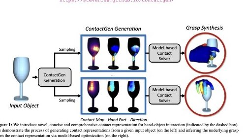
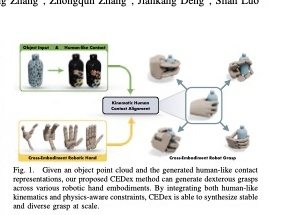
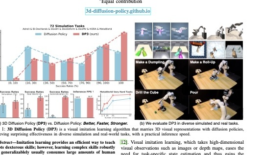
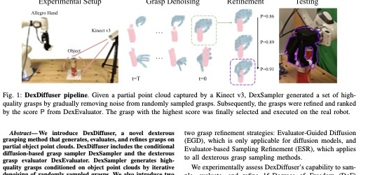
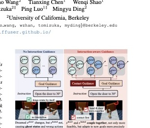
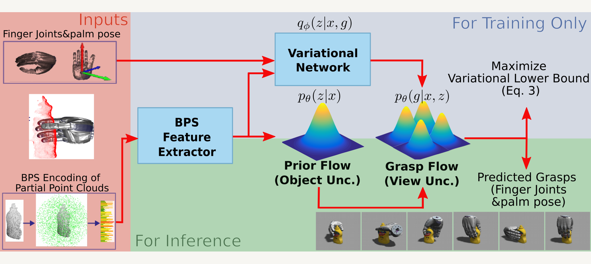
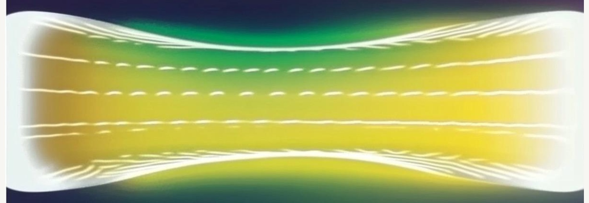
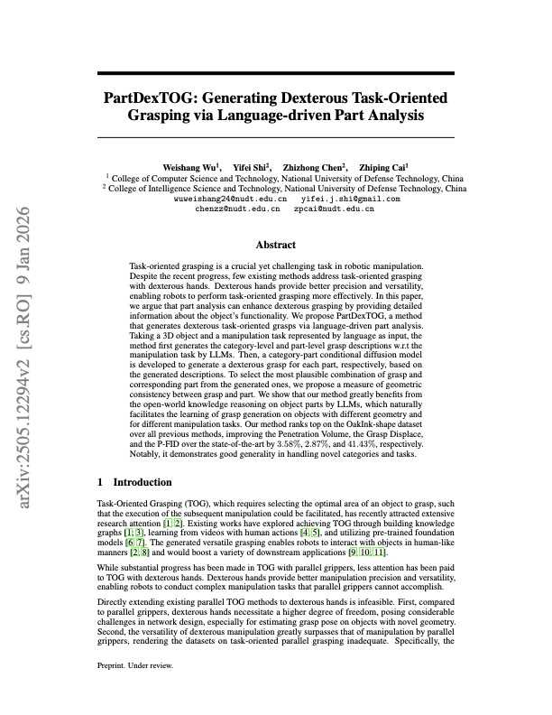
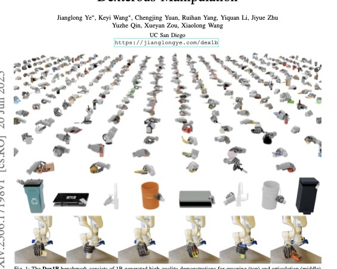
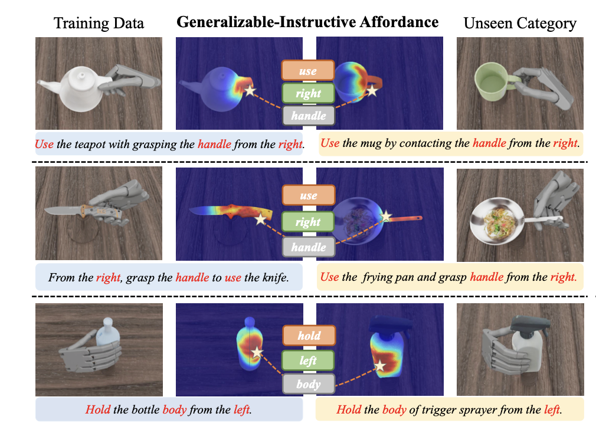

1. Motivation
Why dexterous manipulation need generative models
Dexterous manipulation is harder than parallel-jaw grasping for a basic reason: the robot is no longer choosing only a gripper pose. A multi-fingered hand must coordinate many joints, establish and break contacts, avoid penetration, stabilize the object, and often execute a motion that remains valid after perception errors or object movement.
This creates four major challenges for learning systems: high-dimensional action spaces in multi-fingered hands that require coordinated wrist-palm-finger control; discontinuous contact physics where small pose changes can create, remove, or shift contacts; multimodal solution spaces where different grasps, contact assignments, finger motions, and trajectories can all solve the same task; and limited, noisy training data, since high-quality real-world demonstrations are expensive while simulation data often needs careful filtering before reliable real-robot transfer.
Multiple valid solutions
Dexterous manipulation is highly multi-modal. The same task can be completed with different grasps, contact points, wrist poses, and finger motions. Generative models can produce diverse feasible solutions instead of predicting only one action.
High-dimensional control
Multi-fingered hands have many degrees of freedom. Generative models learn structured motion priors from data, helping robots generate natural and efficient hand-object interactions in a large action space.
Complex contact reasoning
Dexterous tasks rely on rich contacts, friction, sliding, rolling, and regrasping. Generative models can learn common contact patterns and generate physically plausible manipulation behaviors.
Long-horizon action generation
Many dexterous tasks require sequences of coordinated actions, such as grasping, rotating, regrasping, inserting, and releasing. Generative models can generate temporally coherent action trajectories for such long-horizon manipulation.
2. Evolution
From hand-crafted search to generative ecosystems
Optimization, RL, imitation, and early latent priors
Demonstration-augmented RL, imitation learning, and analytic post-optimization established the baseline view: direct exploration in hand joint space is too brittle. VAE-style models then compressed grasp spaces into low-dimensional latent variables, improving sampling efficiency but struggling with sharply separated contact modes.
Diffusion changes behavior cloning
Diffusion Policy reframed policy learning as conditional action denoising, with receding horizon control and sequence generation. DP3 then showed that compact 3D point-cloud conditioning could improve spatial generalization, making diffusion more practical for manipulation.
Physics, semantics, speed, and scale
Recent work asks harder questions: does the generated hand actually touch the object? Can inference be fast enough for control? Can language select the functional object part? Can a generator create enough high-quality data to train the next policy?
3. Taxonomy
Four architectures plus data engines
The important distinction is not only which generator is used. It is what variable the method chooses to generate: joint poses, contact maps, action chunks, point-conditioned trajectories, demonstrations, or language-grounded grasp intents.
Latent priors
Compress hand poses, contacts, or human grasp features into a tractable latent space. Strong for efficient sampling and cross-embodiment priors; weaker when contact modes are discontinuous.
Generated and aligned data
Scale demonstrations, human-video priors, or collection systems so downstream policies see broader contact and task variation than real robot collection alone can provide.
Iterative denoising
Handles multiple valid futures, supports rich conditioning, and trains stably. The main drawback is latency, especially when many denoising steps are needed.
Invertible likelihood models
Offer exact likelihoods, uncertainty awareness, and faster sampling. They require architectural care because the mapping between simple and complex distributions must remain invertible.
Semantics plus geometry
Combine LLMs, VLMs, contact predictors, diffusion generators, and optimizers. The goal is to make grasps task-aware, not merely stable.
4. Representative Methods
Where each family contributes most
ContactGen: generate contact, then solve pose
ContactGen shifts the representation from raw hand pose to an object-centric contact representation with three parts: where contact occurs, which hand part touches, and contact direction. A conditional generator predicts this contact structure from the object, and a model-based solver recovers grasp geometry.
This is a useful decomposition because contact is closer to the physical cause of a grasp than joint angles. The trade-off is that feasibility depends on the quality of the downstream optimization, so generation and physical validation remain separated.

CEDex: human-like contact as a bridge between hands
CEDex targets a practical bottleneck: a grasp model trained for one hand does not automatically transfer to another morphology. It first generates human-like contact representations with a conditional VAE, then aligns these contacts to arbitrary robotic kinematics through topological merging and SDF-based optimization.
The key idea is to transfer contact intent rather than copy a human or robot pose directly. This makes the representation more reusable across different numbers of fingers and link structures.

Diffusion Policy and DP3: policies as denoising processes
Diffusion Policy formulates a visuomotor policy as a conditional denoising process over future action sequences. Instead of regressing to an average action, the model samples from a learned action distribution and executes the first chunk in a receding-horizon loop.
DP3 keeps the same generative policy idea but changes the observation side: compact point-cloud features give the model a direct 3D spatial signal. This matters for manipulation because small viewpoint or appearance changes should not change the geometry of the task.

DexDiffuser: sample, score, and refine dexterous grasps
DexDiffuser specializes diffusion to dexterous grasp generation from partial object point clouds. DexSampler denoises random grasp samples into candidates, while DexEvaluator ranks and guides refinement. The paper reports higher average success rates than FFHNet in both simulation and real robot experiments.
The broader lesson is that diffusion alone does not solve physical feasibility. Strong systems often pair generation with evaluators, collision checks, or optimization.

DexHandDiff: prevent plausible but impossible states
A common failure of naive diffusion planning is the ghost state: the object moves before meaningful hand contact. This is statistically plausible in a generated trajectory but physically invalid. DexHandDiff addresses this with a dual-phase process: pre-interaction contact alignment, then post-contact goal-directed control.
This represents a shift from "generate a good-looking motion" to "generate an interaction with the right causal structure." For dexterous manipulation, that distinction is central.

FFHFlow: diversity under partial observation
FFHFlow uses normalizing-flow variational inference to model a hierarchical grasp manifold for multi-fingered hands. Its main motivation is that the robot often sees only a partial point cloud, so the model should represent uncertainty over the unseen object geometry instead of committing to one overconfident shape.
Invertibility and likelihoods make flows useful for introspection and ranking. The method combines flow likelihood with a discriminative evaluator, which is another example of generation plus physical-quality selection.

FlowPolicy: consistency flow matching for one-step control
FlowPolicy attacks a practical weakness of diffusion: iterative inference can be too slow for control loops. It conditions on 3D point clouds and uses consistency flow matching to approximate trajectories from noise to robot actions with a self-consistent velocity field.
The paper reports a 7x inference speedup while maintaining competitive success rates. For dexterous robotics, this speed question is not cosmetic; latency changes whether a generative policy can be deployed in the loop.

EgoScale: Scaling Dexterous Manipulation with Diverse Egocentric Human Data
EgoScale connects generative modeling with dexterous manipulation by formulating high-DoF robot control as conditional action generation. Instead of generating images or static grasps, it trains a flow-based Vision-Language-Action policy to generate future wrist motions and dexterous hand joint actions conditioned on egocentric observations and language instructions.
Large-scale human video pretraining provides a reusable motor prior, while lightweight aligned human-robot mid-training grounds this prior in executable robot control. In this sense, the generative model serves as the policy itself, producing temporally coherent action chunks for long-horizon dexterous manipulation.
Source: arXiv:2602.16710.
PartDexTOG: language selects the functional part
Task-oriented grasping asks not only "can I hold this object?" but "where should I hold it for this task?" PartDexTOG uses LLM-driven category and part descriptions, then conditions a diffusion model on both task language and part-level grasp information.
This is the semantic layer missing from purely geometric grasping. A mug grasp for pouring, passing, or washing may require different contact regions even if all are stable.

Dex1B: generation moves upstream into dataset construction
Dex1B reframes generative models as data infrastructure. It uses generative modeling with geometric constraints to create one billion demonstrations for grasping and articulation. The downstream method, DexSimple, is trained on this scale and evaluated in simulation and real transfer settings.
This suggests a different future for dexterous learning: progress may come as much from scalable generated data and filtering pipelines as from a single stronger policy class.

Learning Continuous Grasping Function with a Dexterous Hand from Human Demonstrations
This work learns a Continuous Grasping Function for dexterous hand manipulation from human demonstrations. It retargets human-object interaction trajectories to robot hand demonstrations, then trains a conditional variational autoencoder to generate smooth, continuous-time grasping motions. The model samples multiple candidate plans, tested in simulation and transferred to a real Allegro Hand.
Source: arXiv.
UGG: Unified Generative Grasping
UGG proposes a unified diffusion-based framework for dexterous grasp generation. Instead of regressing one hand pose, it jointly models object point clouds, hand parameters, and contact information. A transformer diffusion model generates diverse grasp candidates, while a lightweight discriminator improves physical success. It also supports reverse generation, such as inferring object information from hand configurations.
Source: arXiv.
UniDexFPM: Universal Dexterous Functional Pre-grasp Manipulation Via Diffusion Policy
UniDexFPM studies functional pre-grasp manipulation, where a dexterous hand repositions or reorients objects before grasping. It uses diffusion policy to generate control actions conditioned on object state, goal pose, and hand-object interaction. The policy models multi-modal contact-rich behavior, enabling robust preparation for later functional grasping across diverse scenarios.
Source: arXiv.
DexGraspNet 2.0: Learning Generative Dexterous Grasping in Large-scale Synthetic Cluttered Scenes
DexGraspNet 2.0 introduces a large synthetic benchmark for dexterous grasping in cluttered scenes, with thousands of scenes and hundreds of millions of grasps. It also proposes a two-stage generative method using diffusion conditioned on local geometry. The model generates feasible grasps under clutter and demonstrates strong zero-shot sim-to-real transfer.
Source: arXiv.
ARCap: Collecting High-quality Human Demonstrations for Robot Learning with Augmented Reality Feedback
ARCap is primarily a data-collection system, but directly supports generative policy learning. It uses augmented-reality visual feedback and haptic warnings to help users collect robot-executable demonstrations that respect kinematics and avoid collisions. These higher-quality demonstrations can train methods such as diffusion policies for dexterous or cross-embodiment manipulation.
Source: arXiv.
Vision-Language-Action Model and Diffusion Policy Switching Enables Dexterous Control of an Anthropomorphic Hand
This work combines a fine-tuned vision-language-action model with a diffusion policy for dexterous control of a 13-DoF anthropomorphic hand. The VLA model handles language-conditioned high-level planning, while diffusion handles precise low-level interactions. A learned switching signal transitions between them for more robust language-guided pick-and-place and error recovery.
Source: arXiv.
Learning Dexterous In-Hand Manipulation with Multifingered Hands via Visuomotor Diffusion
This paper learns real-world dexterous in-hand manipulation using visuomotor diffusion policies. Demonstrations are collected via an AR teleoperation setup for the Allegro Hand and filtered to remove low-quality trajectories. The diffusion policy maps visual observations and robot states to actions, enabling complex multi-finger skills such as one-handed bottle-lid unscrewing.
Source: arXiv.
AffordDexGrasp: Open-set Language-guided Dexterous Grasp with Generalizable-Instructive Affordance
AffordDexGrasp addresses open-set, language-guided dexterous grasping by bridging language semantics and hand actions through a generalizable affordance representation. It uses Affordance Flow Matching to generate language-conditioned affordances and Grasp Flow Matching to generate grasps from those affordances, improving generalization to unseen object categories and task instructions.
Source: arXiv.

G-DexGrasp: Generalizable Dexterous Grasping Synthesis Via Part-Aware Prior Retrieval and Prior-Assisted Generation
G-DexGrasp uses a retrieval-augmented generation pipeline for task-oriented dexterous grasp synthesis. It first retrieves part-aware priors, including contact parts and affordance-related grasp distributions, then uses them to guide hand-configuration synthesis and refinement. This prior-assisted generation makes grasps more plausible for unseen object categories and language instructions.
Source: arXiv.
Contact2Motion: Contact guided dexterous grasp motion generation with synergy embedded optimization
Contact2Motion focuses on generating complete dexterous grasp motions, not only final poses. It uses contact information as guidance and combines motion generation with synergy-embedded optimization. The generative stage predicts contact- or motion-related structures, while optimization enforces hand synergies and physical plausibility, producing smoother and more controllable grasp trajectories.
Source: Sage Journals.
5. Application Map
Generative models now appear across the manipulation stack
Grasp synthesis
Generate stable, diverse hand poses or contact patterns for unknown objects. Representative lines include ContactGen, FFHNet, DexDiffuser, FFHFlow, UniDexGrasp, CEDex, and PartDexTOG.
Policy learning
Learn distributions over action chunks rather than a single deterministic control output. Diffusion Policy, DP3, and FlowPolicy are the main references for this policy-level view.
Contact reasoning
Predict where and how the hand should touch the object before solving the final configuration. Contact-centric models reduce the mismatch between visual plausibility and physical validity.
Cross-embodiment transfer
Transfer human or object-centric priors to different robotic hands. This is crucial because each hand morphology has its own kinematic constraints and demonstration cost.
Task-oriented grasping
Use language, part structure, or semantic instructions to select grasps that support downstream actions, not just static force closure.
Data generation
Produce synthetic demonstrations at a scale real collection cannot match. The critical question becomes filtering and grounding: generated data must remain physically executable.
| Family | Best use | Strength | Main limitation |
|---|---|---|---|
| VAE / cVAE | Compact grasp or contact priors | Fast sampling, smooth latent space | Can blur separated contact modes |
| Data engines | Scaling demonstrations and reusable priors | Broader task coverage and better pretraining | Requires filtering, alignment, and physical grounding |
| Diffusion | Multimodal actions and grasp candidates | Stable training, rich conditioning | Slow iterative inference |
| Normalizing flows | Uncertainty-aware sampling and fast generation | Likelihoods, invertibility, speed potential | Architecture constraints can be restrictive |
| Hybrid / VLA | Task intent and semantic part selection | Language and geometry in one pipeline | Grounding errors can create confident wrong grasps |
6. Design Patterns
The strongest systems share a few recurring ideas
Generate an intermediate physical representation
Contact maps, part assignments, and interaction phases are easier to validate than raw high-dimensional joint trajectories. They also expose why a grasp should work.
Pair the generator with a critic, solver, or constraint
DexDiffuser, FFHFlow, CEDex, and related methods all use some form of evaluator, SDF constraint, likelihood ranking, or optimization. Generation proposes; physics filters.
Condition on geometry in 3D whenever possible
Image features are powerful, but manipulation depends on metric geometry. DP3 and FlowPolicy show why point-cloud conditioning is attractive for spatial generalization.
Move from single tasks to reusable priors
Cross-embodiment and large-scale data generation methods treat a generator as reusable infrastructure, not only a planner for one benchmark.
7. Open Challenges
What still blocks general-purpose dexterous generation?
Latency
Diffusion is powerful but iterative. Real-time manipulation needs fewer denoising steps, distillation, consistency models, or flow-matching alternatives.
Physical validity
A sample can look plausible while violating contact causality, friction, penetration, or object dynamics. The next wave must integrate constraints earlier in generation.
Tactile grounding
Most methods still rely heavily on vision and simulation labels. Real dexterity depends on touch, slip, force, and contact state estimation.
Embodiment mismatch
Human hands, Allegro hands, Shadow hands, and custom grippers do not share the same action space. Contact-level abstractions are promising but not yet solved.
Data scarcity
General dexterity needs large and diverse demonstrations, but high-quality real robot data is expensive to collect. Simulation can scale data generation, but contact-rich behaviors require careful filtering, domain randomization, and real-world validation.
Closed-loop robustness
Generated trajectories must remain valid after perception errors, object motion, slip, or unexpected contact changes. Dexterous generation therefore needs fast replanning and feedback correction, not only high-quality open-loop samples.
Task and object generalization
A general-purpose dexterous model must transfer across objects, tools, task goals, and environments. This requires more than generating local hand motions; the model also needs semantic understanding, affordance reasoning, and long-horizon planning.
Likely research direction
The most promising path is not simply "bigger diffusion." It is a contact-centric generative stack: semantic intent selects a functional part, a contact generator proposes interaction structure, a fast flow or distilled diffusion model produces the action, and a physics-aware layer filters unsafe samples before execution.
8. Reading Guide
Representative papers to read next
Figure assets in this blog are extracted from the cited papers and used here for course discussion and paper-sharing context.